6 · Cardiac Pathophysiology
Lecture 6 · 14 September 2026 · deck title slide: “Lecture Prepared by: Matthew Ward, DMSc, MBA, PA-C”. The calendar lists Dr. Rappa for this session; who delivered it is not confirmed.
Instructional Objectives
- Review the anatomy of the heart
- Review the function of cardiac structures
- Review the different lipoproteins
- Describe the molecular mechanisms of common cardiopathies
- Compare and contrast the various etiologies and risk factors for coronary heart disease
- Describe the pathological processes and risk factors for the formation of coronary atherosclerosis and plaques
- Explain the pathophysiology of cardiac ischemia
- Compare and contrast the etiologies and pathophysiological processes of coronary syndromes
- Describe the etiologies and pathophysiological processes for angina pectoris
- Compare and contrast the etiologies and pathophysiological processes of acute coronary syndrome
- Compare and contrast the etiologies and pathophysiological processes of valvular stenosis, regurgitation, and prolapse
- Compare and contrast the etiologies and pathophysiological processes of infective cardiopathies
- Compare and contrast the pathophysiology of blood pressure regulation
- Compare and contrast the pathophysiology of the cardiac conduction system
- Compare and contrast the pathophysiology of structural cardiac pathologies
6.1 · Objectives a & b — Anatomy of the heart and function of cardiac structures
The anatomy in this deck is the coronary circulation, because every disease that follows is a problem of supply through it. Three slides (5–7) are pictures only:
| Vessel | Branches shown on the slides |
|---|---|
| Left main coronary artery | Divides into the left anterior descending artery (the anterior interventricular branch, running in the anterior interventricular sulcus) and the circumflex branch |
| Right coronary artery | Runs in the coronary sulcus; gives the marginal branch and the posterior interventricular branch |
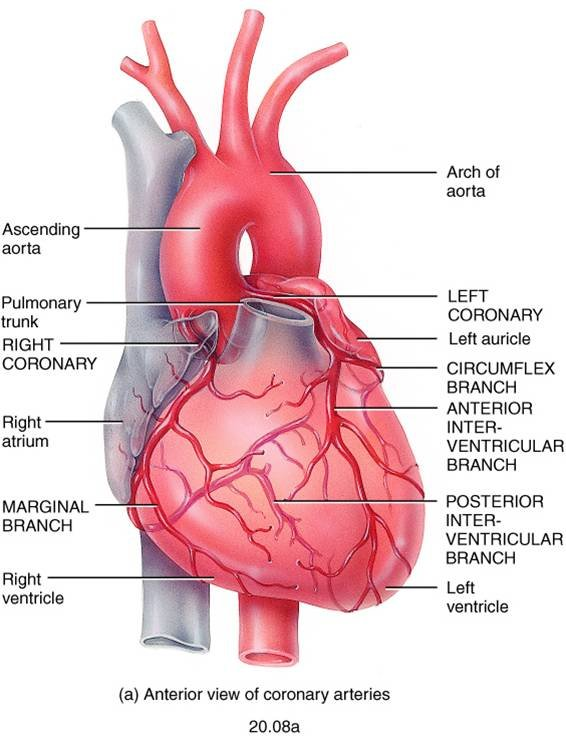
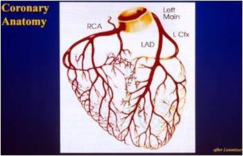
Function: what sets the heart’s oxygen demand
Slide 31 names the four determinants of workload: heart rate, preload, afterload and contractility. An increase in any one of them increases the demand for oxygen. That list is the demand half of every ischemia question (section 6.6).
The Frank–Starling law (slide 62)
The more the ventricle fills during diastole, the greater the volume it ejects in the systole that follows; in a healthy heart the end-diastolic volume will equal the stroke volume. The force any single muscle fiber generates is proportional to its initial sarcomere length (preload), and that stretch is set by the end-diastolic volume. Maximal force comes at an initial sarcomere length of 2.6 micrometers, a length rarely exceeded in the normal heart.
6.2 · Objective c — The different lipoproteins
Plaques are made of lipid, and lipid travels in the blood bound to specific proteins. Which lipoprotein carries it changes the risk (slide 12):
| Lipoprotein | Rich in | Effect on atherosclerosis risk |
|---|---|---|
| Low-density lipoprotein (LDL) | Cholesterol | Highest risk |
| Very-low-density lipoprotein (VLDL) | Triglycerides | Increases risk |
| High-density lipoprotein (HDL) | — | Decreases risk: carries cholesterol back to the liver, clearing it away from plaque |
Familial hypercholesterolemia (slide 13) is the most common form of genetic hyperlipidemia. The defect is in the low-density lipoprotein receptor on liver cells, so the liver cannot remove cholesterol from the bloodstream. High-fat diets are the acquired counterpart listed on the same slide.
Lecture 7 adds a fourth name: lipoprotein(a), an altered form of low-density lipoprotein linked to coronary and cerebrovascular disease, whose risk is independent of total cholesterol (section 7.7).
6.3 · Objective d — Molecular mechanisms of common cardiopathies
The deck has no single slide for this objective; it is answered across the lecture. Every disease here reduces to one of four mechanisms:
| Where | Mechanism | Examples in this lecture |
|---|---|---|
| Coronary arteries | Oxygen supply falls below demand | Stable, variant and unstable angina; myocardial infarction |
| Valves | Extra pressure work (stenosis) or extra volume work (regurgitation) | Mitral and aortic stenosis and regurgitation; prolapse |
| Myocardium | Inflammation, dilation, hypertrophy or stiffening of the muscle itself | Myocarditis; dilated, hypertrophic, restrictive cardiomyopathy |
| Pericardium | External compression or encasement that limits filling | Effusion and tamponade; constrictive pericarditis |
Homocysteine (slide 11)
An intermediary amino acid formed in the conversion of methionine to cysteine, with primarily atherogenic and prothrombotic properties. The vascular injury it causes: intimal thickening, elastic lamina disruption, smooth muscle hypertrophy, marked platelet accumulation, and formation of a platelet-enriched occlusive thrombus.
The molecular picture of a plaque (slide 19)
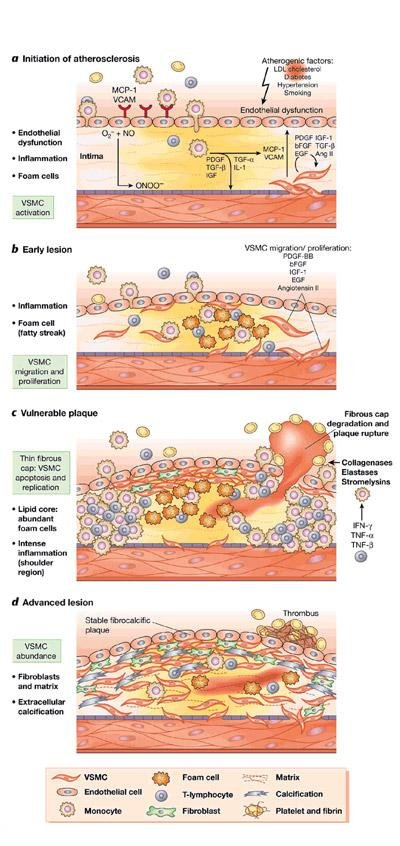
6.4 · Objective e — Etiologies and risk factors for coronary heart disease
Definition (slide 4). Coronary heart disease, also called ischemic heart disease or coronary artery disease, is the insufficient delivery of oxygenated blood to the myocardium because of atherosclerotic coronary arteries. About 50% of those who die of cardiovascular disease die of it. When the heart’s metabolic demand for oxygen exceeds the supply, the myocardium becomes ischemic; ischemia causes abnormal heart function and abnormal cardiac rhythms, and if prolonged, irreversible damage.
| Etiology (slides 8–9) | How it causes ischemia |
|---|---|
| Atherosclerosis — behind almost all coronary heart disease | Progressive narrowing of the lumen, which predisposes to the processes that precipitate ischemia: thrombosis, coronary vasospasm, endothelial cell dysfunction |
| Abnormalities of the microcirculation | Abnormal regulation of the small cardiac vessels by their endothelial cells, so control of the cardiac blood supply is abnormal |
| Uncommon: decreased oxygen content of blood | A respiratory cause; the arteries are open but the blood carries too little |
| Uncommon: poor perfusion | Hypotension or hypovolemia; too little pressure to drive flow |
| Major risk factors (slide 10) | Probable risk factors |
|---|---|
| Age · family history · abnormal lipids · cigarette smoking · hypertension · diabetes mellitus · obesity | Male sex · homocysteine · high-sensitivity C-reactive protein |
6.5 · Objective f — Formation of coronary atherosclerosis and plaques
The sequence on slides 14–16, in order:
- Injury to the endothelial cells starts it — from chronic hemodynamic wall stress, toxins, inflammation or hyperlipidemia.
- The injured endothelium becomes more permeable, and leukocytes are recruited.
- Low-density lipoprotein leaks through the endothelial wall, where cells and macrophages oxidize it.
- Oxidized lipid damages both the wall and the smooth muscle cells; more macrophages arrive and keep engulfing lipid.
- Lipid-filled macrophages become foam cells. Both kinds of macrophage release inflammatory mediators and growth factor, attracting more leukocytes and stimulating smooth muscle proliferation.
- Excess lipid and debris pool inside the wall to form the lipid core.
- Plaques with large lipid cores are fragile and rupture, exposing subendothelial proteins, which starts platelet aggregation and thrombus formation; thrombotic material can be incorporated, enlarging the plaque.
- Over time collagen and fibrin form a cap, which makes the plaque more stable.
- Plaques grow over years until they begin to occlude the lumen. At 75% occlusion, blood flow is compromised.
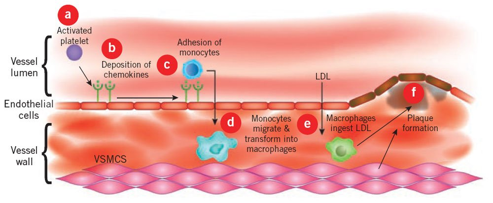
What makes a plaque rupture
Slide 16 lists what makes a plaque vulnerable to erosion or rupture: intra-plaque inflammation, a large core with a thin cap, superficial platelet aggregation, a ruptured cap, and severe stenosis. Slides 26–28 give the reasons:
- Risk depends on the composition of the plaque and the mechanical stresses on it. A vulnerable plaque has a large necrotic core under a thin fibrous cap.
- A triggering event of enough magnitude and duration compromises it — for example the shear force of blood flowing at high velocity through a severe stenosis.
- The diseased wall may be rich in vasa vasorum capillaries. Their thin walls hemorrhage, depositing blood products and building pressure inside the plaque.
The consequence (slide 29): thrombosis, and emboli carried downstream to block smaller vessels.
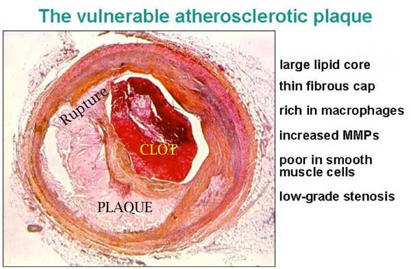
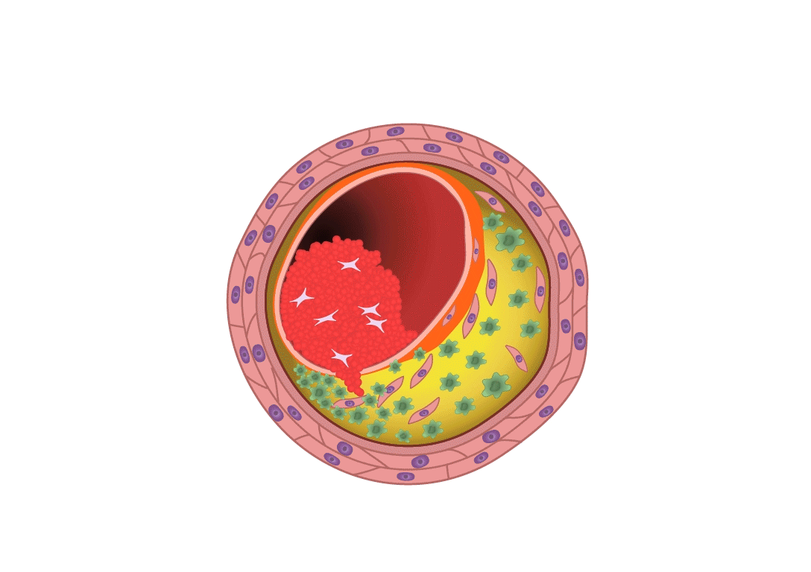
6.6 · Objective g — The pathophysiology of cardiac ischemia
Ischemia starts when oxygen supply is insufficient for the demand of the cardiac cells. With less oxygen, less ATP (adenosine triphosphate) is formed (slide 30). Every cause falls on one side of the balance:
| Supply falls: coronary perfusion impaired by | Demand rises: workload increased by |
|---|---|
| Large atherosclerotic plaques · acute platelet aggregation, then thrombosis · vasospasm · abnormal microcirculation · poor perfusion pressures | Heart rate · preload · afterload · contractility |
- When plaque builds over years, the heart develops collateral circulation to keep the muscle perfused (slide 31) — one reason a slow occlusion can be tolerated and a sudden one cannot.
- Myocardial oxygen consumption and myocardial blood flow correspond nearly linearly; metabolic signals are the principal determinants of oxygen delivery to the myocardium.
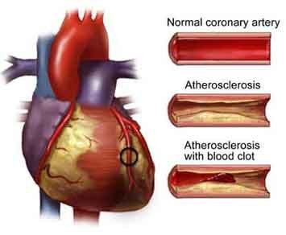
6.7 · Objective h — Coronary syndromes
Coronary syndromes are classified by the severity and onset of cardiac symptoms (slide 33):
| Chronic syndromes | Acute syndromes |
|---|---|
| Stable angina · ischemic cardiomyopathy | Unstable angina · myocardial infarction |
The dividing line is mechanism: the chronic syndromes come from a fixed narrowing that fails only when demand rises; the acute ones come from plaque rupture with acute thrombosis (section 6.9).
6.8 · Objective i — Angina pectoris
Angina is intermittent cardiac ischemia that is insufficient to kill cardiac cells. It occurs under conditions that increase the heart’s oxygen demand, and may cause insufficient pumping, leading to pulmonary congestion (slide 34).
| Type | Mechanism | Trigger |
|---|---|---|
| Stable (typical) — the most common | Stenotic atherosclerotic vessels reduce flow to a critical level | Increased cardiac workload: perfusion is adequate at rest and inadequate under load |
| Prinzmetal (variant) | Vasospasm is the probable mechanism; its cause is unknown | Unpredictable; no relation to physical or emotional stress, even though plaques are present |
| Unstable (crescendo) | May progress to acute ischemia | Classed with the acute coronary syndromes for that reason |
6.9 · Objective j — Acute coronary syndrome
Acute coronary syndrome includes both unstable angina and myocardial infarction, because they are hard to distinguish clinically. In both, pain lasts longer than typical angina, and plaque rupture with acute thrombosis is thought to occur (slide 37).
Myocardial infarction results from prolonged or total disruption of blood flow, causing cell death by necrosis or apoptosis. The initiating feature (slide 38):
- Thrombosis on top of an ulcerated or cracked atherosclerotic plaque
- Platelets adhere to the ruptured plaque, forming a platelet plug
- The clotting cascade is activated
- A growing thrombus occludes the vessel
What the occlusion does depends on collateral circulation, workload, and length of time. A typical infarct has several zones of cells in various stages of necrosis. Complete occlusion follows a pattern (slide 39):
| Time after complete occlusion | What happens |
|---|---|
| Immediately | ATP is depleted |
| A few minutes | The muscle can no longer contract |
| After 30 minutes | Irreversible cell necrosis |
Where infarcts happen (slide 40). Nearly all are in the left ventricular walls:
| Artery occluded | Share of infarcts |
|---|---|
| Left anterior descending | 40–50% |
| Right coronary | 30–40% |
| Left circumflex | 15–20% |
How the infarcted area changes (slide 40):
| Time | Gross change |
|---|---|
| 6 hours | Gross examination first becomes positive |
| 18–24 hours | Area becomes paler |
| Then | Yellowish and soft, with a border of red vascular connective tissue |
| 1–2 weeks | Necrotic tissue is taken away |
| By 6 weeks | Tough fibrous scar |
6.10 · Objective k — Valvular stenosis, regurgitation and prolapse
Valves are damaged by inflammation with scarring (mitral or aortic), calcification (mitral or aortic), or congenital defects (any valve). The altered hemodynamics raise cardiac workload, and heart failure may result (slide 42).
| Stenosis | Regurgitation (insufficiency) | |
|---|---|---|
| Definition | Failure of the valve to open completely | Inability of the valve to close completely |
| Extra work | Pressure work: blood forced through a smaller opening; a pressure gradient forms across the valve | Volume work: blood flows back across the valve and must be pumped again |
| Threshold / tempo | Hemodynamics affected at 50% closure; progresses slowly, so the heart compensates by myocardial cell hypertrophy | Acute regurgitation comes from infection or papillary muscle rupture |
| Primary causes | Post-inflammatory scarring from rheumatic fever; aging valvular calcification | Rheumatic heart disease; infective endocarditis |
| Lesion | Mechanism | Consequences |
|---|---|---|
| Mitral stenosis (slides 45–46) | Abnormal left atrial to left ventricular gradient during diastole: atrial pressure stays higher than ventricular pressure, and the gradient grows as the stenosis worsens | Left atrial congestion, raised left atrial pressure, raised pulmonary pressures, decreased left ventricular stroke volume. Atrial enlargement and hypertrophy → pulmonary hypertension → right-sided hypertrophy and failure. With progression: atrial fibrillation (from increased atrial volume), atrial enlargement, atrial clots |
| Mitral regurgitation (slide 48) | Backflow from ventricle to atrium during systole; a high afterload increases the regurgitation | Raised left atrial volume and pressure; the left ventricle pumps a greater volume to keep an effective stroke volume, so both atrium and ventricle dilate and hypertrophy; if severe, left-sided heart failure |
| Mitral valve prolapse (slide 49) | Ballooning of the mitral valve into the left atrium during systole | Usually no symptoms; in a few cases enough to cause some mitral regurgitation |
| Aortic stenosis (slides 50–51) | Most commonly age-related calcification, common with a bicuspid aortic valve; rheumatic disease is uncommon and affects children and young adults. Obstruction to outflow during systole creates a left ventricular to aortic gradient | The ventricle generates high systolic pressures and slowly hypertrophies; hypertrophy plus high pressure predispose to ischemia and angina; may lead to left heart failure |
| Aortic regurgitation (slide 53) | Incompetent valve leaks from aorta back into the left ventricle during diastole; causes similar to mitral regurgitation, with aortic root dilation (from aging or connective tissue disease) a common one | Left ventricle hypertrophies and dilates; diastolic pressures fall; high workload can lead to left-sided heart failure |
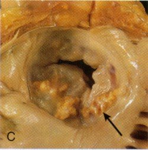
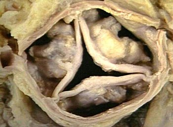
6.11 · Objective l — Infective cardiopathies
| Condition | Mechanism |
|---|---|
| Rheumatic heart disease (slides 54–55) | An uncommon but serious consequence of rheumatic fever, the acute inflammatory disease that follows infection with group A beta-hemolytic streptococcus. The damage is an immune attack caused by cross-reactivity, not the organism itself, with a genetic predisposition seen in certain HLA (human leukocyte antigen) types. The inflammation involves all layers of the heart (carditis). In the endocardium: valvular swelling, erosions, platelet aggregation and fibrin on the leaflets, and with progression scarring and shortening of the valve structures. |
| Infective endocarditis (slide 56) | Invasion and colonization of endocardial structures by pathogens, causing inflammation. Invasion of the bloodstream is a prerequisite. Vegetations form — microorganisms enmeshed in fibrin — which grow large, interfere with valve function and predispose to emboli. Most common organisms: Streptococcus strains and Staphylococcus aureus. |
| Subacute infective endocarditis (slide 57) | Insidious onset in people with a preexisting valve pathology. The organisms are less virulent — the slide lists S. aureus, Streptococcus and Candida — and are not virulent enough to attack a healthy endocardium; the damaged valve is what lets them in. |
| Myocarditis (slide 59) | Etiologies include microbes, immune-related disease and physical agents; Coxsackievirus is the most common cause in North America. Mechanism in section 6.14. |
| Acute pericarditis (slide 70) | Most cases are idiopathic, and most of those are viral; the inflammation damages the pericardium. Section 6.14. |
6.12 · Objective m — Blood pressure regulation
No slide in the Cardiac deck teaches this objective. Lecture 7 does, on slides 19–21: blood pressure is set by cardiac output and vascular resistance, resistance is regulated at the arterioles, and a fall in pressure triggers the renin–angiotensin–aldosterone response. The full treatment is in section 7.5.
Where pressure appears in this deck, it is as load on the heart: afterload is one of the four determinants of oxygen demand (slide 31); a high afterload increases mitral regurgitation (slide 48); in aortic regurgitation diastolic pressures fall (slide 53); and poor perfusion pressure is one cause of ischemia (slide 30).
6.13 · Objective n — The cardiac conduction system
No slide in the deck covers the conduction system. The deck mentions rhythm in only two places:
- Ischemia can lead to abnormal cardiac rhythms as well as abnormal heart function (slide 4).
- Mitral stenosis leads, with progression, to atrial fibrillation due to the increased atrial volume (slide 46).
Nothing further is added here, so that nothing on this page goes beyond the deck. If the objective was covered aloud, those notes are the source.
6.14 · Objective o — Structural cardiac pathologies
Myocarditis (slides 59–60)
Characterized by inflammation, leukocyte infiltration and necrosis of the myocardium. The picture: left ventricular dysfunction, general dilation of all four chambers, patchy or diffuse necrotic lesions, inflamed and edematous muscle with leukocyte infiltrates, and endocardial structures that are usually normal.
Cardiomyopathy (slides 61–65)
Some have known causes. Those of unknown cause are grouped by their major pathophysiological feature:
| Type | What the muscle does | Why the heart fails |
|---|---|---|
| Dilated (also called congested) | Dilation of one or both ventricles | Cardiac failure with dilation. Factors: alcohol, genetics, pregnancy, post-viral |
| Hypertrophic | A thickened, hyperkinetic ventricular muscle mass | Symptoms from ventricular outflow obstruction and impaired diastolic filling |
| Restrictive | A stiff, fibrotic, rigid, noncompliant ventricle; most related to a specific condition, for example amyloidosis | Restricted diastolic filling → low stroke volume → heart failure |
Pericardial disease (slides 66–72)
Rarely primary; usually secondary to another cause. Whatever the cause, fluid accumulates in the pericardial sac and the pericardial structures become painfully inflamed.
| Pericardial effusion type | What it is and why |
|---|---|
| Serous | A transudate, secondary to heart failure or hypoproteinemia |
| Serosanguinous | Serous fluid plus blood, after blunt chest trauma, heart surgery or cardiopulmonary resuscitation |
| Chylous | Lymph, from obstruction to lymph drainage |
| Blood (hemopericardium) | Penetrating cardiac trauma |
An effusion is by definition non-inflammatory fluid. Cardiac tamponade occurs when a large amount of pericardial fluid compresses the heart chambers from outside so that filling is impaired; it is life-threatening (slide 69).
| Pericarditis | Mechanism |
|---|---|
| Acute | Mostly idiopathic, most of those viral; the inflammation damages the pericardium |
| Chronic (healed) | Healing of an acute form leaves chronic dysfunction; two principal types below |
| Adhesive mediastinopericarditis | Follows suppurative or caseous pericarditis, or surgery. The sac is destroyed and the heart adheres to the surrounding mediastinal structures, so every beat pulls against them and workload rises |
| Constrictive pericarditis | Many causes unknown; can share the adhesive form’s causes. The sac becomes dense, nonelastic, fibrous and scarred, and encases the heart like a stiff cage, impairing diastolic filling |
7 · Vascular Pathophysiology
Lecture 7 · 15 September 2026 · deck title slide: “Presented by Stacie Gopal, DMS, PA-C”, “Adapted from Lauren Reynolds, PA-C”. The calendar row names Professor Reynolds; the deck’s own wording is used here.
Instructional Objectives
- Review the anatomy of the vascular system
- Review the functions of the components of the vascular system
- Describe the molecular mechanisms of common vascular pathologies
7.0 · What the recording adds
The 51-minute recording was read in two independent transcriptions and cross-examined. Both agree on everything below. Timestamps are minutes into the recording.
| Said | What it means for the exam |
|---|---|
| “Do know that a consequence of atherosclerosis is peripheral arterial disease… an individual might experience claudication… because there’s a lack of oxygenated blood supply to that musculature under increased demand.” [33:43] | The one explicit “do know” in the lecture. The mechanism: stenosis → ischemia that shows only when demand rises, exactly like stable angina in section 6.8. |
| “Notice the size of the arteries, because much of what we’re going to be discussing today involves the large versus medium versus small.” [1:51]; “the take home point is that it affects different vessels based on their size and physiologic purpose.” [43:21] | The organizing principle of the whole lecture: large elastic arteries → aneurysm; medium muscular arteries → atherosclerosis; small arteries and arterioles → hypertension (section 7.4). |
| “Principal mechanisms of vascular disease, it’s kind of easy, it’s two things. It’s either narrowing of the vessel… or weakening of the vessel, which would be dilation and rupture.” [22:08] | Sort every disease in this lecture into one of the two bins. |
| “An aneurysm means a weakening of the wall, it does not mean a rupture of the wall.” [38:55] | Answering a student’s question: not all aneurysms rupture; the risk depends on size (section 7.8). |
| “You are held responsible for the textbook information too.” [21:59]; “If there’s any discrepancy… the textbook is going to be the rule to prevail… but I won’t put any trick questions on the test trying to compare these two, I promise.” [33:27] | Said of the overlap with the Cardiac lecture on atherosclerosis. She pointed at the textbook’s Figure 11.3 (the neointimal response) and its Key Concepts box (section 7.3). |
- Vasculitis: “more than 20 forms… I just threw out a couple of examples there, but again this is not something we can dive into in tremendous detail today.” [43:15, 44:38]
- Mycotic aneurysm: “These are very rare, but it’s there for the sake of completeness.” [42:08]
- Atherosclerosis was presented as a quick review, “because I know it was covered yesterday” [30:11]. Section 6.5 is the full version.
7.1 · Objective a — Anatomy of the vascular system
The vascular system is a closed network of blood and lymph vessels. On the slide 3 overview, the numbered structures are 1 aorta, 2 pulmonary artery, 3 right heart, 4 left heart, 6 abdominal aorta (there is no 5). Slides 4 and 7 show the named arteries and veins, superficial and deep veins, and the hepatic portal system, where veins from the stomach and intestines enter the liver so that nutrients are processed and drugs metabolized on first pass.
From heart and back: the five components (slides 8–9)
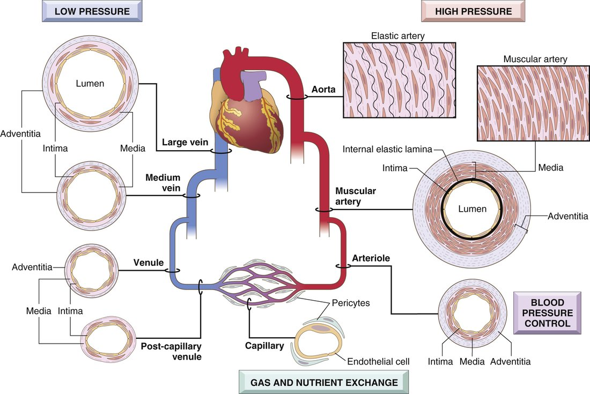
The three layers (slide 10)
| Layer | Structure |
|---|---|
| Intima | A single layer of endothelial cells on a basement membrane, with a thin underlying layer of extracellular matrix |
| Media | In elastic arteries such as the aorta, lamellar units of elastin fibers and smooth muscle cells arranged like tree rings, which expand during systole and recoil during diastole |
| Adventitia | Loose connective tissue for support; can carry nerve fibers; in large vessels it holds their own small arterioles (vasa vasorum) that perfuse the adventitia and part of the media |
All three layers are present in arteries and veins, though more clearly demarcated in the thicker arterial wall. The amount of smooth muscle and matrix in the media varies with the hemodynamic demand of the vessel’s location. Capillaries are the exception: they have no media.
Capillaries (slide 11)
A capillary is equal to or slightly smaller than the diameter of a red blood cell — in the lecture, roughly 5–10 micrometers against a red cell of 7–8. The lumen is lined with endothelium and has no media. Capillaries have a large cross-sectional area and a low flow rate; thin walls plus slow flow make exchange easy. Tissues with high metabolic rates, myocardium and brain, have the highest capillary density.
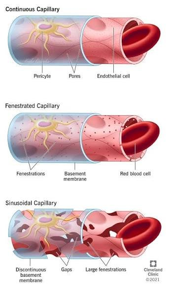
7.2 · Objective b — Functions of the components of the vascular system
| Function of the vascular system (slide 5) | |
|---|---|
| Nutrients | Transported to tissues |
| Waste products | Transported away from tissues |
| Hormones | Transported from one part of the body to another |
| Homeostasis | Balance in all tissue fluids, for the function of cells |
Two circulatory loops (slide 6). Pulmonary: deoxygenated blood from the right heart to the lungs. Systemic: oxygenated blood from the left heart to the tissues, returning deoxygenated blood to the right heart. The naming rule she stopped on: an artery carries blood away from the heart and a vein toward it, which is why the pulmonary artery carries deoxygenated blood and the pulmonary vein oxygenated.
| Component (slide 8) | Function |
|---|---|
| 1 · Arteries | High pressure, strong walls, high-velocity flow |
| 2 · Arterioles | Control conduits for the release of blood into the capillaries — the principal points of resistance to flow (“small but mighty”) |
| 3 · Capillaries | Exchange of fluid, nutrients, electrolytes, hormones and wastes between blood and tissue |
| 4 · Venules | Collect blood from capillaries and coalesce into larger veins |
| 5 · Veins | Return blood to the heart; major reservoir of extra blood; low pressure, thin walls |
Veins hold about 66% of the total blood volume (slide 35), so maintaining that volume is a large part of maintaining blood pressure.
7.3 · Objective c — The healthy wall and its response to injury
| Cell (slide 12) | What it does in health |
|---|---|
| Endothelial cells — specialized simple squamous epithelium lining the lumen | Vessel homeostasis; a nonthrombogenic surface that keeps blood fluid; modulates medial smooth muscle tone and so vascular resistance; metabolizes hormones such as angiotensin; regulates inflammation; affects the growth of other cells, particularly smooth muscle |
| Smooth muscle cells — the predominant cell of the media | Normal vascular repair, and a large part in atherosclerosis: they proliferate when stimulated, synthesize collagen, elastin, proteoglycans, growth factors and cytokines, and are responsible for vasoconstriction and vasodilation |
Intimal thickening (slides 13–15)
Vascular injury with endothelial dysfunction or loss stimulates smooth muscle cell recruitment and proliferation into the intima:
- Endothelial cells migrate in from uninjured areas or come from precursor cells in the blood — and nitric oxide production falls.
- Smooth muscle cells (or circulating precursors) migrate into the intima, proliferate and synthesize extracellular matrix — the primary pathology of neointimal hyperplasia.
- Platelets activate (a thrombus forms) and leukocytes are recruited (the inflammatory cascade begins).
The result is a thickened intima that narrows the lumen and compromises flow. This neointimal response happens with any form of vascular damage, regardless of cause, and involves wall remodeling and loss of lumen patency.
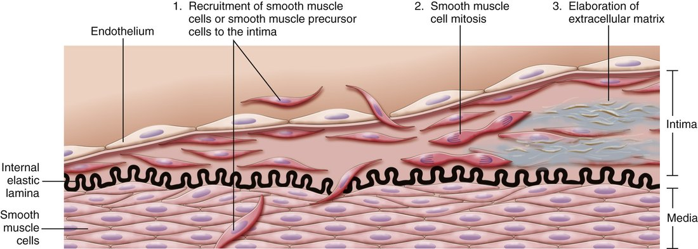
Key Concepts, response of vascular wall cells to injury (slide 15, an image of the textbook’s box; transcribed here because the deck has no text copy):
- All vessels are lined by endothelium; endothelial cells in specific vascular beds have special features for tissue-specific functions (for example, fenestrated endothelium in renal glomeruli).
- Endothelial function is tightly regulated. Stimuli can shift the phenotype: procoagulant versus anticoagulant, proinflammatory versus anti-inflammatory, adhesive versus nonadhesive.
- Injury of almost any type to the wall produces a stereotyped healing response: smooth muscle proliferation, matrix deposition, and intimal expansion.
- Smooth muscle recruitment is signaled by endothelial cells, platelets and macrophages, and by mediators from the coagulation and complement cascades.
- Excessive intimal thickening can cause luminal stenosis and vascular obstruction.
7.4 · Objective c — Two mechanisms, three sizes of artery
The principal mechanisms of vascular disease (slide 16): narrowing — stenosis or obstruction of the lumen, either progressive (atherosclerosis) or precipitous (thrombosis, embolism) — and weakening, which leads to dilation or rupture. Each vessel type has its own structure for its own physiologic needs, so disease has distinct anatomic distributions (slide 17):
| Artery type (slide 18) | Examples | Typical disease and why |
|---|---|---|
| Large (elastic) — aorta about 2–3.5 cm | Aorta and its major branches, such as the iliac arteries | Aneurysm: weakening from loss of elastic tissue |
| Medium (muscular) — coronary arteries 3–4 mm | Smaller aortic branches: coronary and renal arteries | Atherosclerosis: narrowing by intimal thickening, in arteries built with elastic and muscular components to withstand high pulsatile force and recoil |
| Small arteries (2 mm or less) and arterioles (20–100 micrometers) | Within tissues and organs | Hypertension: mechanical stress, endothelial dysfunction, less elasticity and weakening, while the lumen stiffens and narrows |
7.5 · Objective c — Blood pressure regulation and hypertension
Blood pressure is determined by vascular resistance and cardiac output (slide 19):
- Vascular resistance is regulated at the arterioles, by neural and hormonal input, as a balance of vasoconstrictors (such as angiotensin) and vasodilators (such as nitric oxide).
- Cardiac output is heart rate times stroke volume, and stroke volume depends on blood volume, which is regulated by sodium excretion or resorption. Water follows sodium: more sodium in the blood pulls in water, raising volume and so pressure — why chronic high sodium intake leads to hypertension.
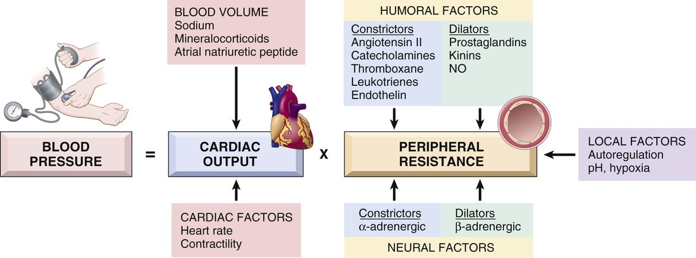
When pressure falls: the renin–angiotensin–aldosterone response
- The kidneys secrete renin in response to decreased pressure in the afferent arterioles.
- Renin cleaves angiotensinogen to angiotensin I.
- Endothelial catabolism produces angiotensin II, a vasoconstrictor.
- Angiotensin II raises pressure by increasing smooth muscle tone and adrenal aldosterone secretion, which increases renal sodium resorption.
When pressure is high: hypertension (slide 20)
A common disorder and a risk factor for atherosclerosis, congestive heart failure, renal failure, cerebral hemorrhage and aortic dissection.
| Essential hypertension | Secondary hypertension | |
|---|---|---|
| Share | 90–95%, idiopathic | Much less common |
| Mechanism | Genetic plus environmental factors; suspected small changes in renal sodium homeostasis and/or vessel wall tone and structure. Insufficient renal sodium excretion at normal arterial pressure → more fluid volume → more cardiac output → more vasoconstriction → raised pressure | Renovascular: renal artery stenosis lowers glomerular flow and afferent arteriolar pressure, which induces renin secretion and raises volume and tone. Primary hyperaldosteronism is a common cause (in the lecture, for example from an adrenal adenoma) |
7.6 · Objective c — Arteriosclerosis
Literally “hardening of the arteries”: the generic term for arterial wall thickening and loss of elasticity. Four patterns (slide 22):
| Pattern | Mechanism and features |
|---|---|
| Arteriolosclerosis of small arteries and arterioles | Can cause downstream ischemic injury. Two subtypes, both related to hypertension: hyaline and hyperplastic |
| Fibromuscular intimal hyperplasia | In muscular arteries larger than arterioles, driven by inflammation or mechanical injury; a healing response. Vessels can become very stenotic — for example in-stent restenosis — and it is a major long-term limitation of solid-organ transplants |
| Mönckeberg medial sclerosis | Calcification of the media of muscular arteries; usually not clinically significant (in the lecture, adults over 50) |
| Atherosclerosis | Greek for “gruel” and “hardening”; the most clinically relevant form (section 7.7) |
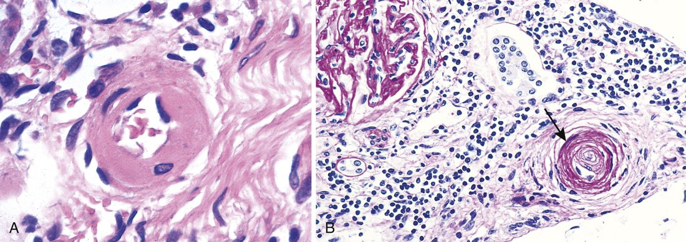
7.7 · Objective c — Atherosclerosis, from the vessel wall
The major pathogenesis of coronary, cerebral and peripheral vascular disease, and the cause of more morbidity and mortality in the Western world than any other disorder — about half of all deaths (slide 24). Risk comes from acquired, inherited, sex- and age-related factors:
| Risk factor (slide 24) | What the lecture adds |
|---|---|
| Hyperlipidemia | — |
| Lipoprotein(a) | An altered form of low-density lipoprotein; risk independent of total cholesterol |
| Smoking · hypertension · diabetes mellitus | — |
| Metabolic syndrome | Central obesity, insulin resistance, hypertension, dyslipidemia; induces a hypercoagulable and proinflammatory state |
| Inflammation (C-reactive protein) | Now included in cardiovascular risk stratification |
| Genetics | Family history is the most important risk factor (on the slide) |
| Increasing age | Progressive; manifests in the 40s to 60s and rises by decade |
| Men and postmenopausal women | Likely a protective effect of estrogen |
The sequence (slide 25). A chronic inflammatory and healing response of the arterial wall to endothelial injury:
- Healthy vessel is injured (think risk factors)
- Low-density lipoprotein accumulates in the wall
- Monocytes adhere to the endothelium
- Platelets adhere
- Smooth muscle cells are recruited, by factors released from activated platelets and macrophages
- Smooth muscle proliferates, extracellular matrix is produced, T cells are recruited
- Lipid accumulates
- Matrix and necrotic debris calcify
Peripheral arterial disease is the consequence she told the class to know: the arteries become stenotic, which causes ischemia; with increased metabolic demand (walking) the patient has claudication, from lack of oxygenated blood to the working muscle (slide 25, [33:43]).
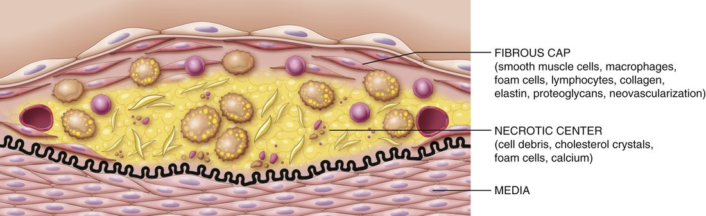
7.8 · Objective c — Aneurysms and dissection
An aneurysm is a localized abnormal dilation of a vessel, congenital or acquired, classified by shape. A dissection is blood entering a defect in the arterial wall and tunneling through the medial or medial-adventitial planes (slide 27).
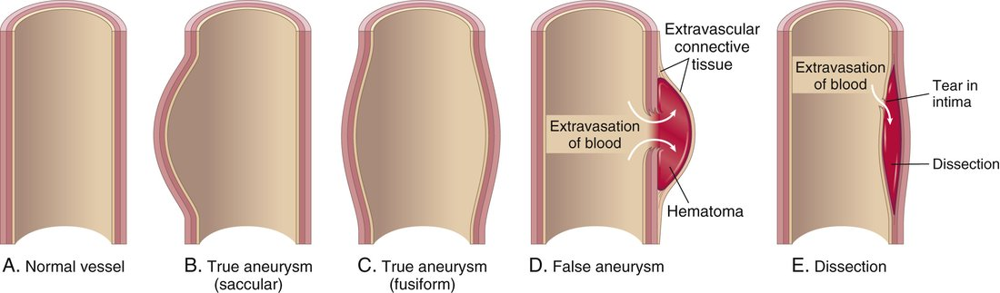
Pathogenesis (slide 28). Arterial walls constantly remodel; anything that compromises the connective tissue of the wall can produce aneurysm or dissection:
| Route to a weak wall | Examples |
|---|---|
| Poor connective tissue quality | Defective collagen synthesis; abnormal transforming growth factor signaling (Marfan syndrome) |
| Imbalance of collagen degradation and synthesis | Altered by inflammation and proteases; a genetic predisposition in the setting of inflammatory lesions |
| Loss of smooth muscle cells or inappropriate matrix synthesis | Ischemia, hypertension, tertiary syphilis |
Predisposing conditions for aortic aneurysm: atherosclerosis, hypertension, smoking.
| Aortic lesion (slide 29) | Mechanism and association |
|---|---|
| Abdominal aortic aneurysm | Atherosclerotic aneurysms occur most commonly in the abdominal aorta and common iliac arteries. Rupture risk rises with size: in the lecture, under 4 cm they typically do not rupture and over 5.5 cm the risk is very high |
| Thoracic aortic aneurysm | Commonly associated with hypertension; also Marfan syndrome and inflammation (and, in the lecture, a bicuspid aortic valve, which raises local hemodynamic stress) |
| Aortic dissection | The laminar planes of the media split to form a blood-filled channel in the wall. Hypertension is the major risk factor. In the lecture: two groups, ages 40–60 with hypertension, or younger patients with connective tissue disorders such as Marfan; also a sudden pressure spike (cocaine) or iatrogenic injury during catheterization |
| Cerebral aneurysm (slide 30) | Features |
|---|---|
| Saccular (berry) | Thin-walled protrusions with very thin or absent media and absent or fragmented internal elastic lamina; typically acquired. Multifactorial: hemodynamic stress, turbulent flow causing structural fatigue, hypertension, smoking, connective tissue disease, possibly inflammation. Lack of elastic lamina is the main feature. |
| Fusiform | Dilation of the entire circumference; atherosclerosis may be a factor |
| Mycotic | Usually from infected emboli in infective endocarditis (rare; see section 6.11) |
7.9 · Objective c — Fibromuscular dysplasia, vasculitis, Raynaud phenomenon, arteriovenous fistula
Fibromuscular dysplasia (slide 31)
A focal irregular thickening of medium and large muscular arteries, exact cause unknown. Segments of wall are thickened by hyperplasia and fibrosis of the media and intima, causing luminal stenosis. Example: the renal arteries (in the lecture also carotid and vertebral; in the renal arteries it can cause renovascular hypertension). The angiographic sign is a “string of beads”, and it may lead to aneurysmal dilation that can rupture.
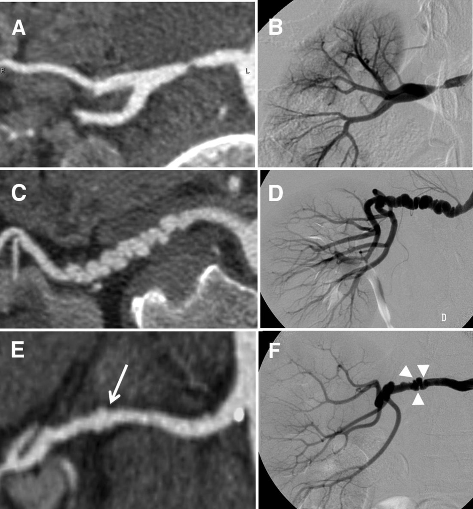
Vasculitis (slide 32)
Vessel wall inflammation, with manifestations set by the vessel affected; any organ or vessel, but mostly small vessels. About 20 primary forms. Two main pathogenic mechanisms: immune-mediated inflammation, and direct invasion of the wall by infectious pathogens.
| Vessel size | Examples on the slide |
|---|---|
| Large | Giant cell arteritis (in the lecture: carotid, vertebral and temporal arteries; granulomatous inflammation) |
| Medium | Polyarteritis nodosa; Kawasaki disease (in the lecture: an acute febrile illness of children under 5) |
| Small | Two subgroups: ANCA (anti-neutrophil cytoplasmic antibody)-associated necrotizing vasculitis; immune complex vasculitis, as in systemic lupus erythematosus and rheumatoid arthritis |
Raynaud phenomenon (slide 33)
An exaggerated vasoconstrictive response to cold and emotional stress, mostly in the arteries and arterioles of the extremities. Vasoconstriction → tissue anoxia → return of oxygenated blood produces the color sequence white → blue → red. In the lecture: white from constriction, blue from lack of oxygen, red when flow returns, which is painful because of rapid vessel dilation and a rush of inflammatory signals.
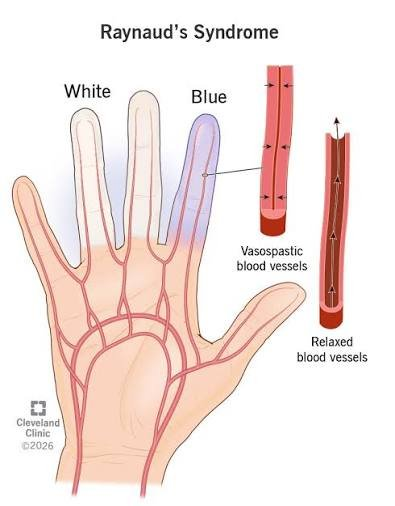
Arteriovenous fistula (slide 34)
An irregular direct connection between an artery and a vein, bypassing the capillaries. Causes: developmental defects; rupture of an arterial aneurysm into an adjacent vein; penetrating injury that pierces artery and vein; inflammatory necrosis of adjacent vessels; or surgical creation for hemodialysis access, to carry high flow at a rapid rate. In the lecture: the vein then remodels until its wall can withstand arterial pressure.
7.10 · Objective c — Veins: varicosities and deep vein thrombosis
Veins have larger diameters and lumens than arteries and hold about 66% of total blood volume. Their thinner media allows greater capacitance, and venous valves prevent gravitational reverse flow. As with arteries, location and structure predict the disease (slide 35):
| Veins | Examples | Typical disease |
|---|---|---|
| Superficial | Great and small saphenous | Varicose veins, from insufficiency of the venous valves; usually the lower extremities (flow against gravity), also pelvis and rectum (hemorrhoids) |
| Deep | Femoral, popliteal, tibial | Stasis in a dilated vein → thrombosis (deep vein thrombosis) |
Varicosities (slide 36). Varicose veins are dilated, tortuous veins caused by chronic high intraluminal pressure and weakened wall support. Esophageal varices are dilated submucosal distal esophageal veins from cirrhosis and portal venous hypertension. Hemorrhoids are varicose dilations of the venous plexus at the anorectal junction. In the lecture, varicose veins and hemorrhoids were both linked to pregnancy.
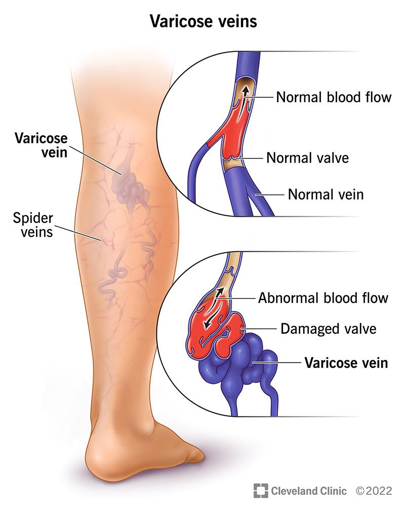
Deep vein thrombosis (slides 37–38)
A clot in a deep vein, typically of the legs; the third most common cause of death from cardiovascular disease.
| Risk factor (slide 37) | Examples |
|---|---|
| Reduced blood flow | Immobility (in the lecture: bed rest, general anesthesia, the postoperative state, stroke, a long flight) |
| Increased venous pressure | Mechanical compression or functional impairment |
| Mechanical injury | Trauma, surgery, intravenous drug use, iatrogenic |
| Increased blood viscosity | Dehydration, thrombocytosis |
| Anatomic variations | — |
| Increased coagulation (genetic or acquired) | Cancer, sepsis, systemic lupus erythematosus, oral estrogen |
Virchow triad (slide 38): (1) damage to the vessel wall, (2) blood flow turbulence, (3) hypercoagulability. Triggers are multifactorial, with the three involved in varying degrees.
What happens to the clot. Over weeks, neutrophils and macrophages infiltrate the fibrin clot, and collagen gradually replaces the fibrin; that remodeling and fibrosis decrease blood flow. If the thrombus dislodges it becomes an embolus that travels through the venous system to the pulmonary artery, occluding it: a pulmonary embolus.
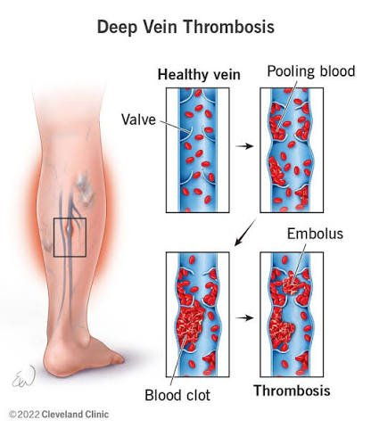